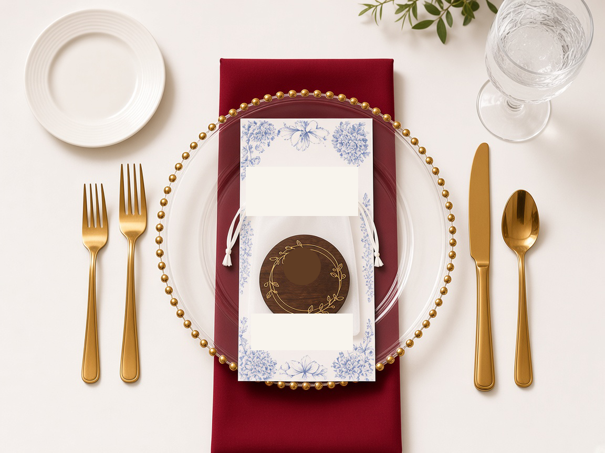

Seating
120 guests: 25 at the head table and 95 at 14 guest tables. Thirteen are 60-inch rounds; Table 6 is two 6-ft tables joined for the A&M group of ten. Both sets of parents sit at Tables 5 and 9, closest to the head table.
Final seating plan for the reception: room layout, head table, seat assignments, meals and flowers.
120 guests: 25 at the head table and 95 at 14 guest tables. Thirteen are 60-inch rounds; Table 6 is two 6-ft tables joined for the A&M group of ten. Both sets of parents sit at Tables 5 and 9, closest to the head table.
Milano’s Sep 25 floorplan. The head table is an 8-table U along the wall with all 25 seats on the outside, facing the dance floor and band. Meg’s tables are in the rear-lobby half of the room; Eric’s are in the front-lobby half. Exit 9:00 pm; everyone out by 10:00 pm.
The bar, boba cart, photo booth and jazz trio are in the front lobby. Large arrangements go on Tables 5 and 9, garland along the head table, and a runner on Table 6. Table 8’s arrangement is still to choose.
Stage on the right, head table on the left, front lobby at the bottom. Meg’s tables are in the upper (rear-lobby) half; Eric’s are in the lower (front-lobby) half.
Cocktail hour uses Doria, Alba and the patio. Guests arrive through the rear building entrance at the top of the drawing. Monza is on the right, the patio farther right, and the front lobby below.
Numbered stations match the descriptions below.
Three tables and a welcome mirror. As guests walk in: the round guest-book and photo table is in the middle, the seating-chart and photo table is on the left, and the memory table is at the back right. The mirror stands beside the seating-chart table.
The boba cart sits with the bar in the front lobby. Staff stand against the wall behind the cart; the queue lines up beside it, clear of the front door.
The jazz trio (cocktail hour) and photo booth are in the front lobby with the bar and boba. The reception band plays on the Monza stage.
The cake table is beside the stage on the front-lobby side. The dance floor sits against the stage. Keep the kitchen doorway and serving route clear.
12 high tables + 10 low tables + 40 chairs, separate from dinner seating. High tops are 30 inches; low tops are 36 inches with four chairs each.
Display furniture: two 6-ft tables, one round guest-book table and the freestanding welcome mirror. The cake has its own low table.
Eric and Meg sit in the middle facing the stage, with Andrew and Mabelle beside them. The lower half is the front-lobby side; the upper half is the rear-lobby side. Outlines mark each 6-ft table.
Meal key: O beef (cow) · C chicken · V vegetarian (broccoli) · VG vegan (avocado) · S couple · K kids (shark). The same symbols are printed on the menu cards.



Seats show first names, with initials where two guests share a name. Meal codes match the head-table key; Eric and Meg have the couple’s meal. Dashed chairs are empty places.